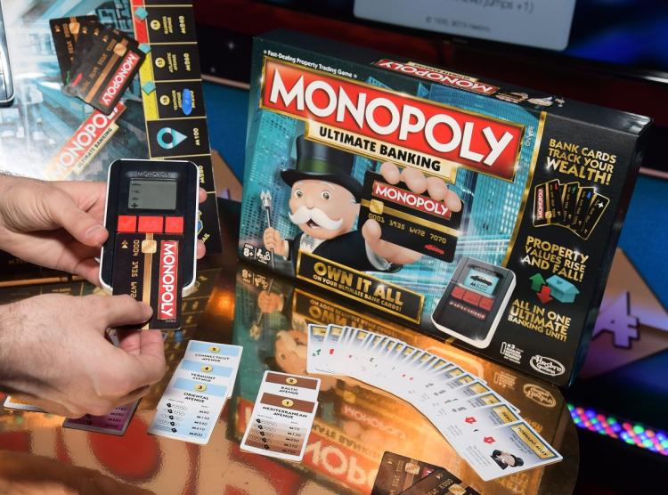

El juego mas vendido de la Historia
Antes
Un juego creado con la función de servir como herramienta para enseñar las teorias de la justicia social y economica extraidas del estudio titulado Progreso y Miseria de Henry George

Un juego creado con la función de servir como herramienta para enseñar las teorias de la justicia social y economica extraidas del estudio titulado Progreso y Miseria de Henry George
comercializada por vez primera en el año 1936
A lo largo de 80 años, el juego ha sufrido una notable evolucion. Sus multiples ediciones y sus tantas versiones han dado pie a que se cambiara desde la caja que lo contiene hasta los elementos que lo componen. Logrando asi mantenerse como el favorito a traves de las decadas
Con los años la finalidad del juego cambio para solo disfrutar un buen rato, negociando propiedades y hasta haciendo uso de medios electronicos para todas las transacciones que requiere el juego
